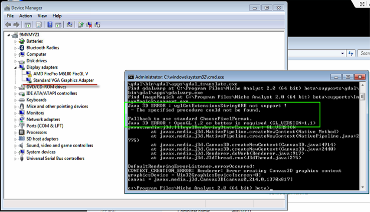

Frequently Asked Questions and Answers
1. Why can’t I run NicheA after double-clicking its icon?
Tons of reasons could cause that you can’t run NicheA successfully. A suggestion is running NicheA in a terminal, and gathering more details which could help you to solve this issue.
In Windows OS, assuming you have installed NicheA to “c:\Program Files\Niche Analyst 3.0”, you can go to start menu -> ‘run …’. Input ‘cmd’ (without quotes) after “Open:”, and click “OK” button. Then you will get a terminal form with a dark background. Go into the folder which NicheA were installed with the following command ‘cd c:\Program Files\Niche Analyst 3.0>cd "c:\Program Files\Niche Analyst 3.0"’ (without single quotes, but keeping the double quotes). Then you need to input command “nichea.bat”. You will get some messages about the exception(s) that why you can’t run NicheA successfully.
In Mac OS X, assuming you have installed NicheA to “/Applications/NicheA.app”, you can go to Applications/Utilities, and double click “Terminal.app” to get a terminal form. Then using the following command to the NicheA installation folder ‘cd /Applications/Niche\ Analyst.app/Contents/Resources/Java/’, and running ‘java –jar nichea.jar’ to harvest the messages above.
If you can’t solve the problem by yourself, please shoot an email to huijieqiao@gmail.com without hesitation.
The Fig.1 shows a typical exception which could cause a user was unable to run NicheA successfully. The message showed NicheA failed to find a required library – OpenGL. After checking the drivers in this computer, we found graphics driver was not appropriate. Then a solution is upgrading the driver to support the OpenGL.

2. Why can I run Maxent, but can’t run NicheA on my computer?
Since both Maxent and NicheA are written in Java programming language, if I can run Maxent on my laptop, I will be able to run NicheA on the same computer!
Several reasons could cause this result. Two typical reasons are 1) a low version Java runtime environment (JRE), or 2) command ‘java’ is not in your ‘path’ environment variable of your OS. The simplest solution for both of them is to download the newest JRE.
If you still can’t get the lovely NicheA interface, please go back to FAQ 1 to get more information or send an email to huijieqiao@gmail.com.
3. Why can’t I run some functions in NicheA?
The most probable cause is that NicheA does not have access to enough memory to complete the function. Click ‘About’ - ‘Niche Analyst’, and check the total free memory in NicheA. If the ‘Total memory’ is smaller than 1,000MB, it will cause unintended errors in NicheA. The "Show log..." menu under "About NicheA" also can provide some useful information to help you solving the problems.
4. How to allocate more memory to NicheA in Windows?
Open and edit ‘nichea.bat’ in Program Files/Niche Analyst (version) folder. Change ‘java –jar nichea.jar’ to ‘java -Xms512m -Xmx4024m –jar nichea.jar’.
5. How to allocate more memory to NicheA in Mac OS X?
Open ‘Applications’ folder, right click ‘NicheA.app’, select ‘Show Package Contents’. Go into ‘Contents’ folder, edit ‘Info.plist’, change the following node in Infor.plist file. Then reopen Niche Analyst.app.
<key>VMOptions</key>
<string>-Xms512m -Xmx2048m</string>
6. How to allocate more memory to NicheA in Linux?
Adding the parameters of "-Xms512m -Xmx2048m" when you run NicheA via a terminal.
7. What’s the meaning of “Exception in thread "AWT-EventQueue-0" java.lang.UnsatisfiedLinkError: gdaljni.dll” when I run NicheA on Windows OS? How to solve it?
The most possibility is you are running 32bit NicheA on a 64bit Windows OS, vice versa. The easiest way to check it is: